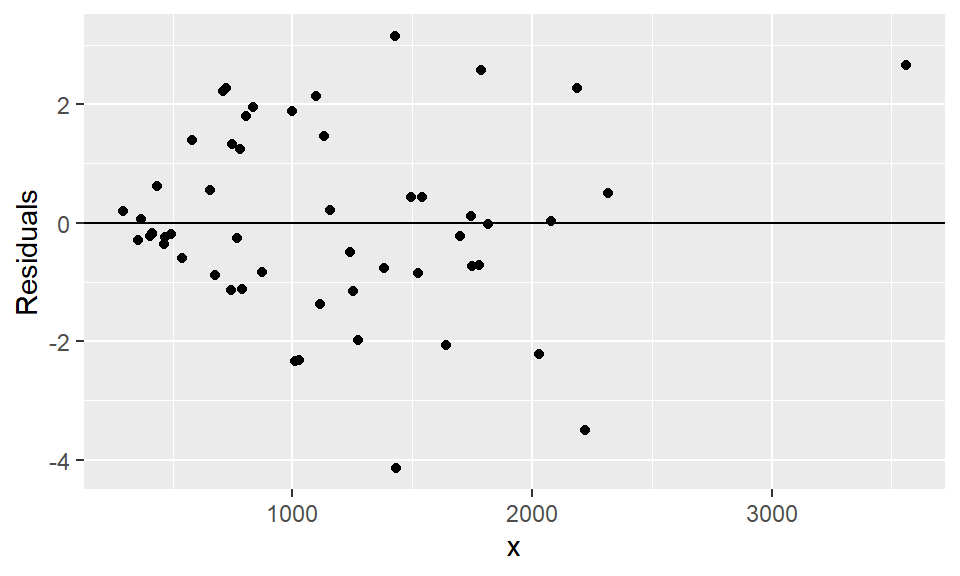

library(haven)
data = read_sav("data/xt4.9.sav")
head(data)# A tibble: 6 × 3
序号 x y
<dbl> <dbl> <dbl>
1 1 679 0.79
2 2 292 0.44
3 3 1012 0.56
4 4 493 0.79
5 5 582 2.7
6 6 1156 3.64违背基本假设的情况
下表是用电高峰每小时用电量\(y\)与每月总用电量\(x\)的数据。
library(haven)
data = read_sav("data/xt4.9.sav")
head(data)# A tibble: 6 × 3
序号 x y
<dbl> <dbl> <dbl>
1 1 679 0.79
2 2 292 0.44
3 3 1012 0.56
4 4 493 0.79
5 5 582 2.7
6 6 1156 3.64model0 = lm(y ~ x, data)
model0
Call:
lm(formula = y ~ x, data = data)
Coefficients:
(Intercept) x
-0.831304 0.003683 答：回归方程为：\(\hat{y} = -0.8313 + 0.0037x\)。
library(ggplot2)
ggplot(model0, aes(x=x, y=.resid)) +
geom_point() +
geom_hline(yintercept = 0) +
labs(y="Residuals")
# 等级相关系数法（Spearman检验）
cor.test(data$x,
abs(resid(model0)),
alternative='two.sided',
method="spearman",
conf.level=0.95)
Spearman's rank correlation rho
data: data$x and abs(resid(model0))
S = 16928, p-value = 0.02091
alternative hypothesis: true rho is not equal to 0
sample estimates:
rho
0.3175294 答：\(|e_i|\)与\(x_i\)的等级相关系数=0.318，P值=0.021，存在异方差性。
# 编写寻找最优权函数
# 特定于幂指型权函数的一元回归
best_weight_1d = function(data, left=-2, right=2){
the_seq = seq(left, right, 0.5)
vec = rep(NA, length(the_seq))
j = 1
for (m in the_seq){
model1 = lm(y ~ x,
weights=1/x^m,
data=data)
vec[j] = logLik(model1) # logLik函数计算模型的对数似然值
j = j + 1
}
best_local = which.max(vec)
if(best_local != left & best_local != right){
cat("幂指数最优取值为:", the_seq[best_local])
}else if(best_local == left){
cat("最优值在边界达到，请扩充范围（left）")
}else{
cat("最优值在边界达到，请扩充范围（right）")
}
}
best_weight_1d(data)幂指数最优取值为: 1.5# 令m=1.5
model1 = lm(y ~ x, weights=1/x^1.5, data=data)
summary(model1)
Call:
lm(formula = y ~ x, data = data, weights = 1/x^1.5)
Weighted Residuals:
Min 1Q Median 3Q Max
-0.017626 -0.005384 -0.002158 0.006423 0.015820
Coefficients:
Estimate Std. Error t value Pr(>|t|)
(Intercept) -0.6834635 0.2976891 -2.296 0.0258 *
x 0.0035571 0.0003582 9.930 1.64e-13 ***
---
Signif. codes: 0 '***' 0.001 '**' 0.01 '*' 0.05 '.' 0.1 ' ' 1
Residual standard error: 0.007914 on 51 degrees of freedom
Multiple R-squared: 0.6591, Adjusted R-squared: 0.6524
F-statistic: 98.6 on 1 and 51 DF, p-value: 1.638e-13# 等级相关系数法（Spearman检验）
cor.test(data$x,
abs(resid(model1)),
alternative='two.sided',
method="spearman",
conf.level=0.95)
Spearman's rank correlation rho
data: data$x and abs(resid(model1))
S = 16848, p-value = 0.01959
alternative hypothesis: true rho is not equal to 0
sample estimates:
rho
0.3207547 # 问题待续答：加权最小二乘回归方程为：\(\hat{y} = -0.683 + 0.00356x\)。因\(R^2=0.659\)，小于普通最小二乘的0.705，说明加权最小二乘的效果不好。
data$y = sqrt(data$y)
model2 = lm(y ~ x, data)
summary(model2)
Call:
lm(formula = y ~ x, data = data)
Residuals:
Min 1Q Median 3Q Max
-1.39185 -0.30576 -0.03875 0.25378 0.81027
Coefficients:
Estimate Std. Error t value Pr(>|t|)
(Intercept) 5.822e-01 1.299e-01 4.481 4.22e-05 ***
x 9.529e-04 9.824e-05 9.699 3.61e-13 ***
---
Signif. codes: 0 '***' 0.001 '**' 0.01 '*' 0.05 '.' 0.1 ' ' 1
Residual standard error: 0.464 on 51 degrees of freedom
Multiple R-squared: 0.6485, Adjusted R-squared: 0.6416
F-statistic: 94.08 on 1 and 51 DF, p-value: 3.614e-13答：经过方差稳定性变换后的回归方程为：\(\hat{y}^{'} = 0.5822 + 0.0009529x\)。